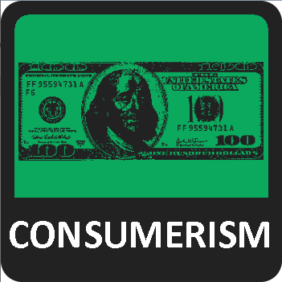
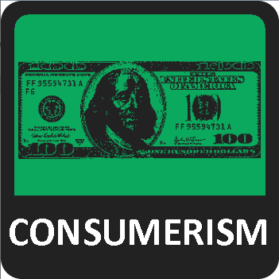
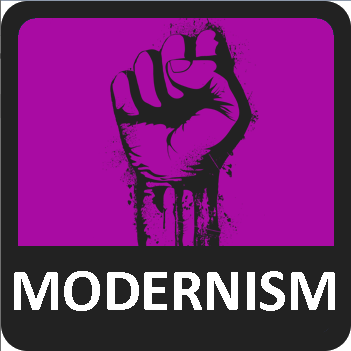
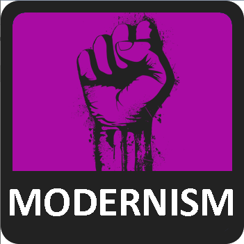

 



7Axes is a political quiz that attempts to assign percentages for seven different axes that each measure mutually exclusive values. You will be presented by a statement, and then you will answer with your opinion on the statement, from Strongly Agree to Strongly Disagree, with each answer slightly affecting your scores. At the end of the quiz, your answers will be compared to the maximum possible for each value, thus giving you a percentage. Answer honestly! (this test is made for fun by me, u/_bannned_ on reddit)
There are questions in the test.
There are seven independent axes - Economic, National, War, Civil, Cultural, Technological and Religious - and each has two opposing values assigned to them. They are:
EGALITARIANISM
Those with higher Egalitarianism scores believe that equality of outcome should be a priority. They tend to support progressive taxation, welfare programs, and at high values, socialism and communism.
ECONOMIC
COMSUMERISM
Those with higher Consumerism scores believe the economy should be focused on individual acheievemnt and markets. They tend to support lower taxes, private enterprise, deregulation, and at high values, laissez-faire capitalism.
NATIONALISM
Those with higher Nationalism scores are patriotic and nationalist. They often believe in patriotic education, supporting veterans, restricting immigration, enforcing assimilation of immigrants, and at high values, ethnic or racial supremecism.
NATIONAL
INTERNATIONALISM
Those with higher Internationalism scores are cosmopolitan and globalist. They often believe in international co-operation such as that of the EU and UN, expanding immigration, multiculturalism, ethnic diversity, and at high values, world federalism.
PACIFISM
Those with higher Pacifism scores tend to prefer peace to war. They often believe in diplomacy over war, oppose foreign intervention, oppose military spending, and at high values, advocate for complete disarmament.
WAR
JINGOISM
Those with higher Jingoism scores advocate for war. They often believe in having a large military, expanding foreign intervention, support military spending, and at high values, support neo-imperialism.
LIBERTARIANISM
Those with higher Libertarianism scores believe in strong protections for civil liberties. They tend to support expansive rights, constitutionalism, decentralised government, the seperation of powers, and at high values, anarchism. Note that this refers to civil liberties, not economic liberties.
CIVIL
AUTHORITARIANISM
Those with higher Authoritarianism scores believe in strong state power. They tend to support state intervention in personal lives, government surveillance, centralised government and at high values, totalitarianism.
TRADITIONALISM
Those with higher Traditionalism scores believe in traditional values and strict adherence to a moral code. Though not always, they are usually religious, and support the status quo or the status quo ante, and at high values, support a reversion to Medievel or Ancient societal values.
CULTURAL
MODERNISM
Those with higher Modernism scores believe in social change and close adherence to science. Though not always, they are usually secular or atheist, and scientific or technological research, and at high values, support a total destruction of religion and tradition.
ACCELERATIONSIM
Those with higher Accelerationism scores seek to accelerate technological development. They often prefer urban society and believe in technological solutions for societal issues, development of AI, genetic modification, and at high values, transhumanism.
TECHNOLOGICAL
DECELERATIONISM
Those with higher Decelerationism scores seek to slow down, prevent or reverse technological development. They often prefer rural society and oppose genetic modification, AI, modern technology, and at high values, support destruction of technology (luddism).
RELIGIOUS
Those with higher Religious scores tend towards believe in a religion or something equivalent.
RELIGIOUS
ATHEISTIC
Those with higher Atheistic scores tend towards rejecting religion and spirituality.
In addition to matching you to the fourteen values, the quiz also attempts to match you to a political ideology.
¯\_(ツ)_/¯
Too Bad